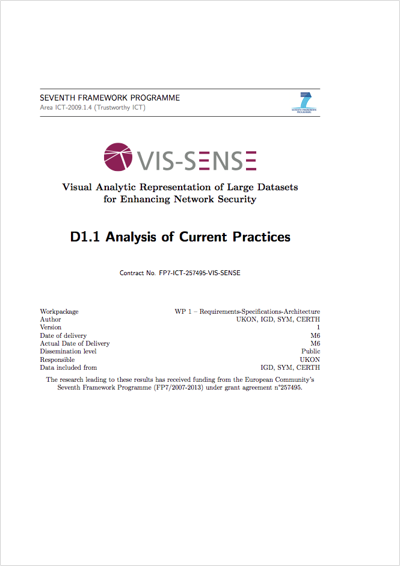

Bonjour
Catégorisation par objectifs de la visualisation pour la sécurité
Christopher Humphries
- Doctorant INRIA à Rennes
- Équipe CIDre à Supélec
- Financé par la DGA-MI
CIDRE
Équipe de sécurité
- Détection d'Intrusions
- Réseaux Ad Hoc
- Vie Privée
Pourquoi visualiser?
En général
Pour nous même
- Trouver un sens aux données
- Comprendre l'idée globale
- Retrouver le contrôle
En sécurité
Pour combler un fossé
- L'analyse manuelle c'est lent
- L'analyse automatique c'est bête
Visualiser
Construire des interfaces vers des données.
Topologie
- Surveillance
- Analyse
- Rapport
visualisation pour
Surveiller
- Corrélation Rapide
- Décision Rapide
- Passage à l'échelle


visualisation pour
Analyser
- Cycles de recherche
- Reconstruction narrative


visualisation pour
Rapporter
- Communication
- Narration

VIZSEC
Est. 2004


Vis Sense
Analysis of Current Practices

MERCI
http://engleek.github.io/CESAR-2014/